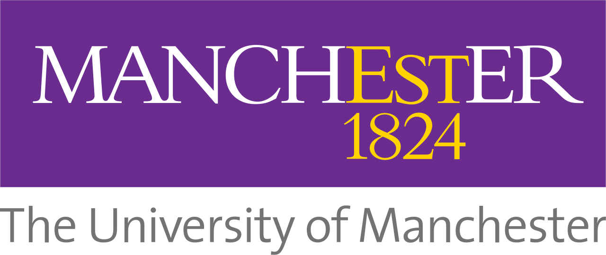
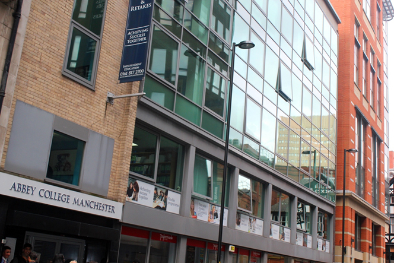

<!-- About Section -->
   <section id="education">
       <div class="container">
           <div class="row">
               <div class="col-lg-12 text-center">
                   <h2>Education</h2>
                   <hr class="star-light">
               </div>
           </div>
           <div class="row">
                <div style="float:right; width:250px">
                    
                    
                </div>
                <ul>
                    <li><p><i>June 2014</i>: Completed A-levels at Abbey College
                    with 3 A's in Maths, Further Maths and Physics.</p></li>
                    <li><p><i>September 2014 - Present</i> : Started Computer
                    Science at the University of Manchester. Have acheived a
                    First class in the course so far for the first year.</p></li>
                </ul>
           </div>
       </div>
   </section>
